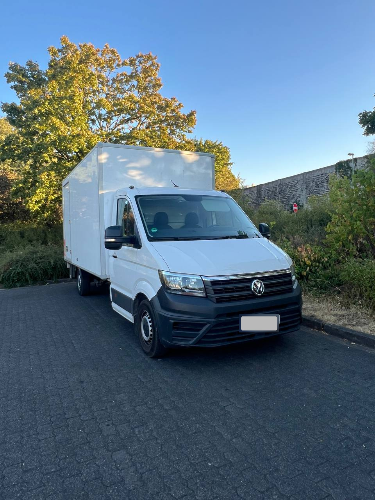
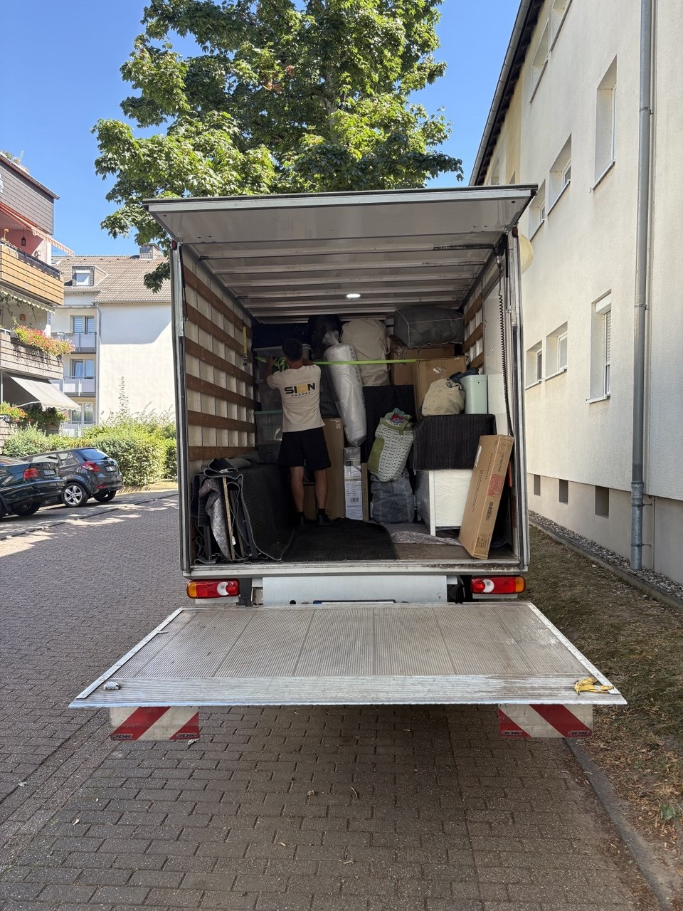

⌂
Privatumzüge
Vom kleinen Wohnungswechsel bis zum kompletten Hausumzug. Wir planen Wege, Ladevolumen und Ablauf so, dass Ihr Umzug ruhig und strukturiert verläuft.
Privatumzug anfragen →Ob Wohnung, Haus, Büro oder einzelner Möbeltransport: SION Umzüge begleitet Sie zuverlässig von der ersten Planung bis zum sicheren Ankommen.

Planung, Transport und Zusatzservice aus einer Hand.
Sie entscheiden, was wir übernehmen. Wir kombinieren Transport, Montage, Verpackung und organisatorische Zusatzleistungen passend zu Ihrem Umzug.
Vom kleinen Wohnungswechsel bis zum kompletten Hausumzug. Wir planen Wege, Ladevolumen und Ablauf so, dass Ihr Umzug ruhig und strukturiert verläuft.
Privatumzug anfragen →Arbeitsplätze, Akten, Mobiliar und Technik werden koordiniert transportiert. Ziel: kurze Unterbrechungen und ein planbarer Neustart am neuen Standort.
Für Umzüge über Stadt- und Landesgrenzen hinaus. Wir stimmen Transport und Ablauf individuell auf Strecke, Umfang und Anforderungen ab.
Wir erstellen Ihnen ein passendes Angebot zur Einreichung bei Ihrer Kranken- oder Pflegekasse. Nach der Kostenübernahme planen wir Ihren Umzug.
Nicht alles soll mit. Wir unterstützen beim Räumen von Wohnungen, Kellern, Lagern oder Büros und stimmen den Umfang vorher transparent mit Ihnen ab.
Auf Wunsch übernehmen wir das sichere Verpacken Ihres Umzugsguts und helfen am Zielort beim Auspacken. Praktisch bei Zeitdruck oder großen Haushalten.
Demontage vor dem Transport und Montage am neuen Ort. Geben Sie im Anfrageformular einfach an, welche Möbel oder Küchenarbeiten benötigt werden.
Kurze Wege sparen Zeit. Wir unterstützen bei der Organisation einer geeigneten Halteverbotszone für den Umzugstag.
01Nur Transport? Kein Problem – wir übernehmen nur das, was Sie wirklich benötigen.
02Komplettservice? Kartons, Verpackung, Montage, Halteverbot und Transport können kombiniert werden.
03Schwieriger Zugang? Angaben zu Etage, Aufzug, Parken und Treppenhaus helfen uns bei der Vorbereitung.
Je früher wir die wichtigsten Eckdaten kennen, desto besser können wir Ihren Umzug vorbereiten.
Sie teilen uns Termin, Adressen, Etagen, gewünschte Leistungen und Besonderheiten mit.
Wir prüfen die Angaben und stimmen offene Punkte persönlich mit Ihnen ab.
Sie erhalten ein auf Ihren Umzug zugeschnittenes Angebot.
Kartons, Halteverbot, Montage oder Möbellift werden nach Bedarf eingeplant.
Am Umzugstag kümmern wir uns um einen strukturierten und sorgfältigen Ablauf.

SION Umzüge bietet professionelle Umzugs- und Transportdienstleistungen für Privatpersonen und Unternehmen. Wir unterstützen Sie bei Wohnungsumzügen, Firmenumzügen, Möbeltransporten und individuellen Transportlösungen.
Im Mittelpunkt stehen für uns ein sorgfältiger Umgang mit Ihrem Eigentum, klare Absprachen und ein freundlicher Service. Statt unnötig komplizierter Pakete stellen wir die Leistungen passend zu Ihrem tatsächlichen Bedarf zusammen.
Unser Standort befindet sich in Düsseldorf. Je nach Auftrag begleiten wir Umzüge in der Region, innerhalb von NRW und darüber hinaus.
Dann schicken Sie uns direkt Ihre Umzugsanfrage. Fotos können Sie ebenfalls anhängen.
Mit detaillierten Angaben können wir Ihre Anfrage schneller und genauer einschätzen. Angebot und Besichtigung sind für Sie kostenlos und unverbindlich. Pflichtfelder sind mit * gekennzeichnet.
Ja. Sowohl das Angebot als auch eine erforderliche Besichtigung vor Ort sind für Sie kostenlos und unverbindlich.
Ja. Nach Prüfung Ihrer Angaben oder einer kostenlosen Besichtigung erhalten Sie ein transparentes Festpreisangebot für den vereinbarten Leistungsumfang.
Am besten, sobald Ihr Termin ungefähr feststeht. So bleibt mehr Spielraum für Planung, Zusatzleistungen und die Organisation einer Halteverbotszone.
Ja. Sie können einzelne Leistungen auswählen oder mehrere Services kombinieren. Teilen Sie uns einfach mit, wobei Sie Unterstützung benötigen.
Ja. Unser Ein- und Auspackservice kann zusätzlich zum Transport angefragt werden. Auch Kartons können Sie im Formular als Bedarf angeben.
Etage, Treppenhausbreite und mögliche Engstellen helfen bei der Planung. Bei schwierigen Zugängen kann je nach Situation ein Möbellift sinnvoll sein.
Ja. Im Anfrageformular können Sie bis zu 15 Bilder hochladen. So lassen sich besondere Möbelstücke, Zugänge oder räumliche Situationen leichter einschätzen.
Ja. SION Umzüge unterstützt auch Büros und Unternehmen. Wichtig sind dabei eine klare Ablaufplanung und möglichst kurze Unterbrechungen.
Ja. Je nach Auftrag sind Umzüge innerhalb von NRW, deutschlandweit und auch ins Ausland möglich. Senden Sie uns die Start- und Zieladresse für eine individuelle Einschätzung.
Füllen Sie das Formular möglichst vollständig aus. Wir prüfen die Angaben und melden uns zur weiteren Abstimmung bei Ihnen.
Rufen Sie uns an oder senden Sie eine E-Mail. Für ein konkretes Angebot empfehlen wir das Anfrageformular mit den wichtigsten Umzugsdaten.